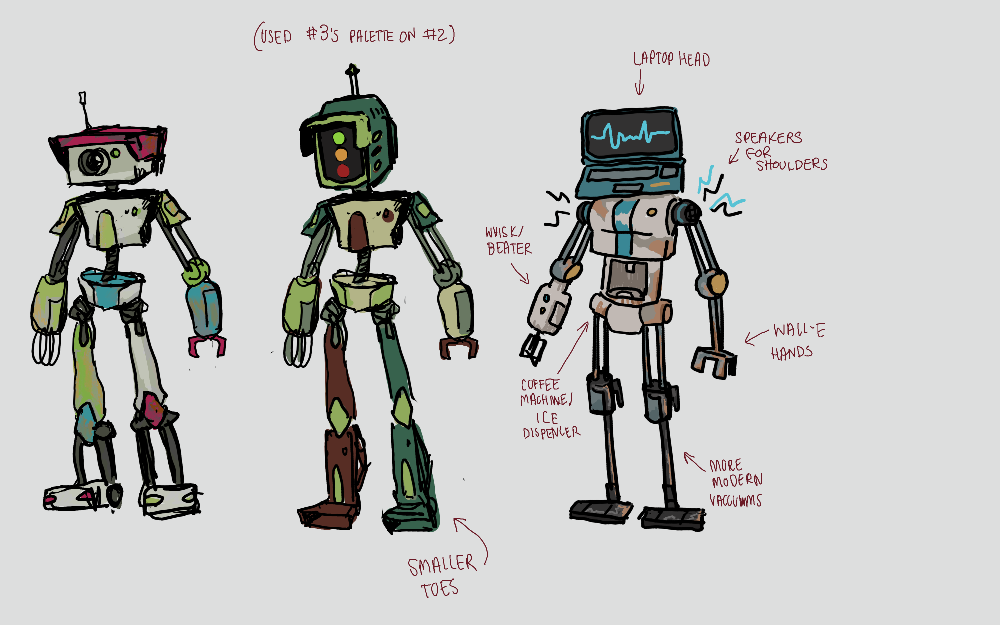
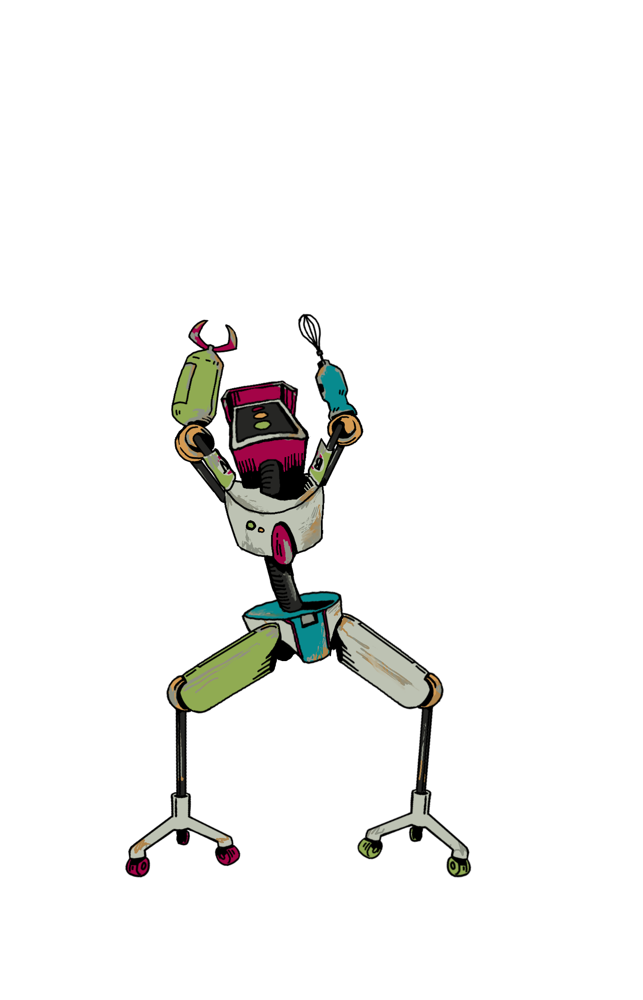

JunkerJam is a side scroller Dance Dance Revolution style game where the user competes against the computer, the Player and the computer both have abilities to either powerup their own gameplay or hinder their oponent. This Game was submitted to the Ubisoft 2024 Australian Game Jam and I was the Director, Game Designer, and Co-Programmer for this project.
 As my first project in the rhythm game genre this game challenged my skills as a Director, a Programmer, and as a Designer. There were multiple aspects of the Genre that I simply was not familiar with and underestimated the commitment that it would involve. Leading to additional mechanics being developed that quickly increased the scope beyond what was feasable.
 Due to a lack of experience in game development as a whole the majority of the abilities appeared as numbers games with a lack a User feedback that left the players In the dark when it came to the results of their actions. Furthermore, the system that measures the success of the player is a limited one, and after further reading and watching several video essays on the innerworkings of Rhythm games as a whole I have learnt of other slightly more complex yet far more gratifying methods of point calculation that would take its place.
Due to the expedited nature of learning a new game genre, and first experiences with features like singletons, the programming of the game could do with much improvement. There was a high usage of coupling and unnecessary singleton usage, which I improved on in later game development projects
Some interpersonal conflicts did arrise over the course of the project. Many of which could have been easily avoided with proper project management software and techniques, such as the scrum method, or the use of Trello or Jira to keep track of workflow.
while there are certainly things that could use improvement in this project the skills it taught me and the people I worked with were extraordinary and I will forever be grateful for the opportunity to direct this game.